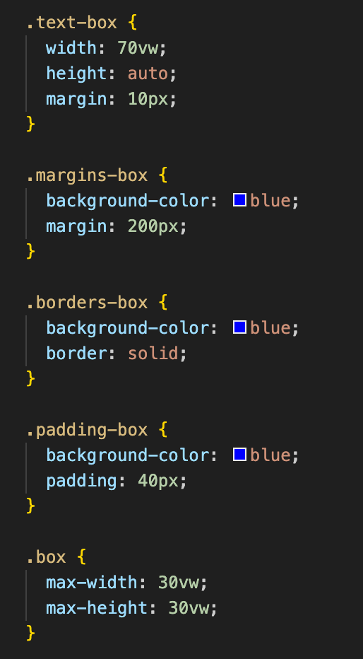

The space between elements (things - anything) on a page. Margins are a bit special - they're not like all the other girls. Margins like to share space with eachother because they are socialist hippies. And like socialist hippies, they are harder to control than borders or padding. The thing to remember is that when you want to increase the space between your elements, only the biggest margin value between the elements will apply.
Borders are pretty self explanatory. They are technically always there even if you can't see them. But say for example that you are a fascist orange and are worried about immigrants stealing your wigs and extra-orange spray tan. You can use these parameters to make the borders visible and more imposing.
Padding is for when the content inside your element is extra sensitive to the troubles of the world and needs a bit more space.
Here is what the above examples look like in CSS:
